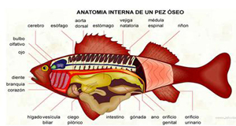

– Tienen el cuerpo suave, fusiforme y recubierto de escamas.
– Sus extremidades son de tipo aleta.
– Tienen fuertes músculos para poder nadar.
Funciones:
– La temperatura del cuerpo depende de la temperatura del medio (ectotérmicos)
– Respiran por branquias.
– Su fecundación es externa.
– Se reproducen por huevos (ovíparos)
– Su alimentación es diferente: unos son carnívoros, otros son herbívoros y otros se alimentan de plancton o de residuos.
